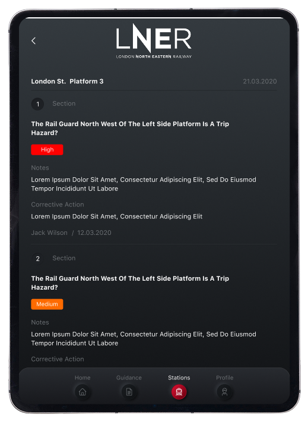

Система оценки рисков на железнодорожных платформах Лондона
Корпоративная платформа для инспекторов, позволяющая проводить проверки безопасности, сохранять отчёты офлайн и синхронизировать их в единую базу

Корпоративная платформа для инспекторов, позволяющая проводить проверки безопасности, сохранять отчёты офлайн и синхронизировать их в единую базу
Лондонская железная дорога управляет десятками станций, где необходимо регулярно проводить оценку рисков:
Ранее эти проверки велись вручную — с бумажными анкетами, а обработка отчётов занимала недели.
Мы создали веб-панель для администраторов, где можно управлять отчетами платформам станций LNER (Лондонской железной дороги).
Веб-интерфейс позволяет создавать анкеты с разными секциями и вопросами, назначая вес каждого ответа.
Результаты автоматически рассчитывают уровень риска.
Инспекторы проходят анкету на платформе, сохраняют результаты офлайн, а система автоматически фиксирует геометку.
После восстановления соединения отчёты синхронизируются с сервером
Мы разрабатываем корпоративные решения под ключ